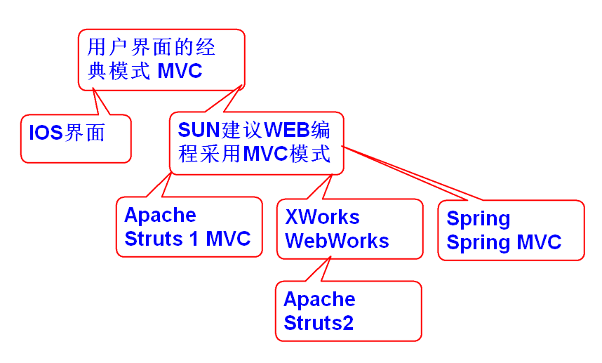
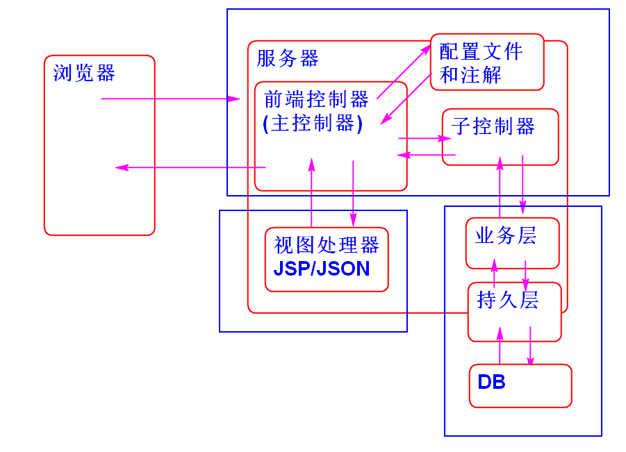
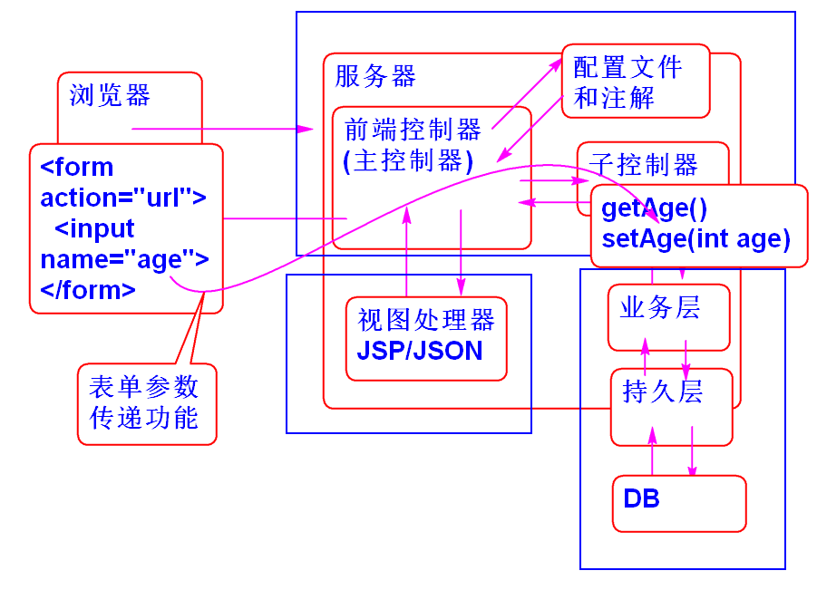
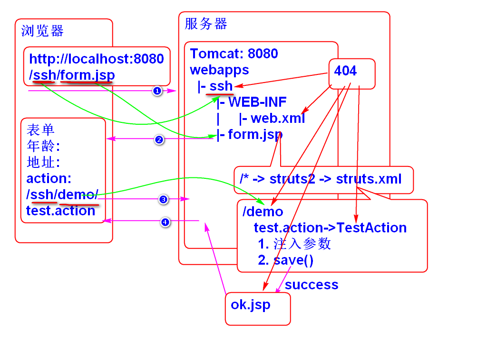
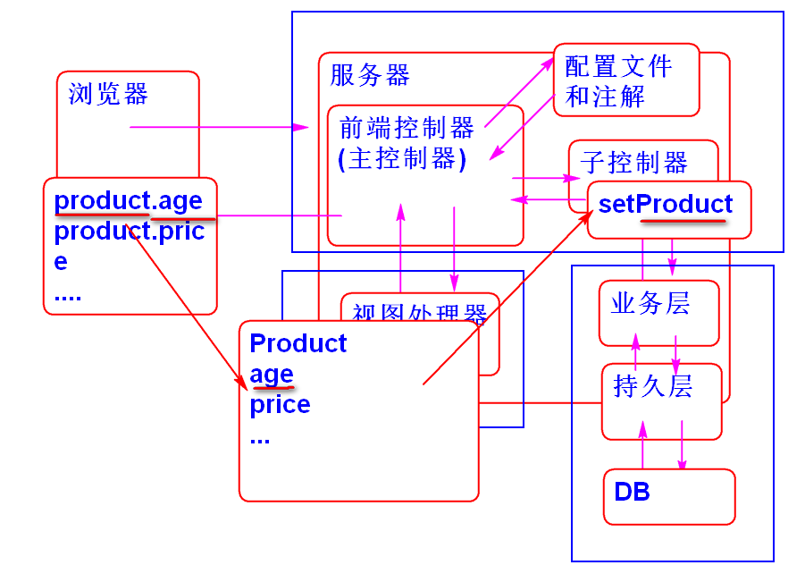
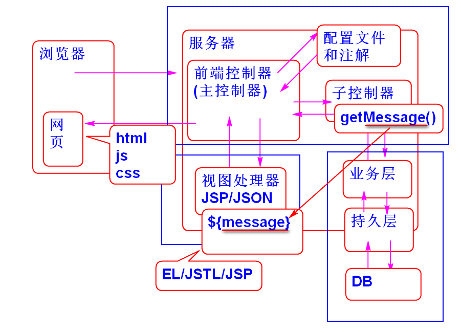
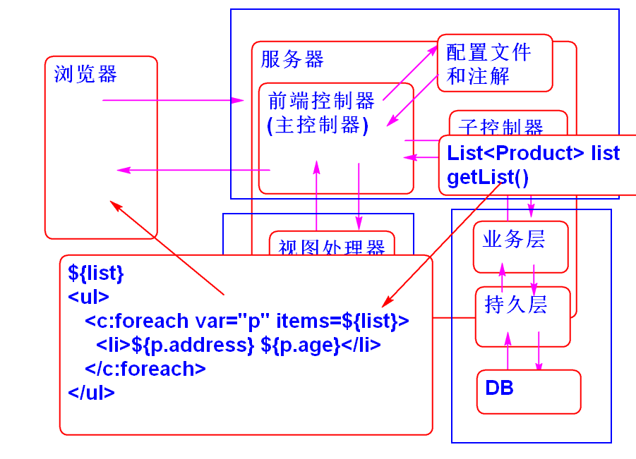

SSH = Struts2 Spring Hibernate SSM = Spring-MVC Spring MyBatis
Struts: 架子


导入 Struts2 包
<dependency>
<groupId>org.apache.struts</groupId>
<artifactId>struts2-core</artifactId>
<version>2.5.12</version>
</dependency>
配置 Struts2 前端控制器(web.xml)
配置web.xml
<filter>
<display-name>StrutsPrepareAndExecuteFilter</display-name>
<filter-name>StrutsPrepareAndExecuteFilter</filter-name>
<filter-class>org.apache.struts2.dispatcher.filter.StrutsPrepareAndExecuteFilter</filter-class>
</filter>
<filter-mapping>
<filter-name>StrutsPrepareAndExecuteFilter</filter-name>
<url-pattern>/*</url-pattern>
</filter-mapping>
添加resource/struts.xml
<?xml version="1.0" encoding="UTF-8"?>
<!DOCTYPE struts PUBLIC
"-//Apache Software Foundation//DTD Struts Configuration 2.5//EN"
"http://struts.apache.org/dtds/struts-2.5.dtd">
<struts>
</struts>
测试
编写控制器
public class DemoAction {
public String test(){
System.out.println("Hello World!");
return "success";//返回"结果(视图)"的名字
}
}
编写/WEB-INF/jsp/ok.jsp作为视图
<%@page pageEncoding="utf-8"
contentType="text/html; charset=utf-8" %>
<html>
<head></head>
<body>
<!-- /WEB-INF/jsp/ok.jsp -->
<h1>Hello World!</h1>
</body>
</html>
配置 struts.xml
配置 URL -> 控制器 -> 结果视图
<!-- 映射的第一层路径
http://localhost:8080/ssh/demo -->
<package name="demo" namespace="/demo"
extends="struts-default">
<!-- http://localhost:8080/ssh/demo/hello.action -->
<action name="hello"
class="ssh.day01.DemoAction"
method="test">
<result name="success">
/WEB-INF/jsp/ok.jsp
</result>
</action>
</package>
extends="struts-default" 用于继承Struts提供的默认组件.
测试:
http://localhost:8088/ssh/demo/hello.action
和Spring MVC 类似 Struts2 也封装了将表单数据传输到控制器中的变量的功能:

步骤:
编写表单页面 form.jsp:
<%@page pageEncoding="utf-8"
contentType="text/html; charset=utf-8" %>
<!DOCTYPE html>
<html>
<head>
<meta charset="utf-8">
</head>
<body>
<h1>页面向控制器传递参数</h1>
<form action="demo/test.action" method="post">
<div>
<label>年龄</label>
<input type="text" name="age">
</div>
<div>
<label>地址</label>
<input type="text" name="address">
</div>
<div>
<label>价格</label>
<input type="text" name="price">
</div>
<input type="submit" value="提交">
</form>
</body>
</html>
编写控制器接收表单参数 TestAction.java
public class TestAction {
private Integer age;
private String address;
private Double price;
public Integer getAge() {
return age;
}
public void setAge(Integer age) {
this.age = age;
}
public String getAddress() {
return address;
}
public void setAddress(String address) {
this.address = address;
}
public Double getPrice() {
return price;
}
public void setPrice(Double price) {
this.price = price;
}
public String save(){
/**
* Struts2 会在执行控制器方法之前将表单参数
* 注入到Bean属性中!
*/
System.out.println("age:"+age);
System.out.println("address:"+address);
System.out.println("price:"+price);
return "success";
}
}
注意: 控制器Bean属性名称与表单项目中name属性一致!
配置: struts.xml
<!-- 接收浏览器发送的表单参数 -->
<action name="test" class="ssh.day01.TestAction"
method="save">
<result name="success">
/WEB-INF/jsp/ok.jsp
</result>
</action>
测试
...

当表单数据项目多, 表单数据项目被重用时候, 使用这个功能:

编写JavaBean
public class Product implements Serializable{
private Integer age;
private String address;
private Double price;
public Product() {
}
public Integer getAge() {
return age;
}
public void setAge(Integer age) {
this.age = age;
}
public String getAddress() {
return address;
}
public void setAddress(String address) {
this.address = address;
}
public Double getPrice() {
return price;
}
public void setPrice(Double price) {
this.price = price;
}
@Override
public String toString() {
return "Product [age=" + age + ", address=" + address + ", price=" + price + "]";
}
}
编写表单 add.html
<!DOCTYPE html>
<html>
<head>
<meta charset="UTF-8">
<title>向服务器传递参数</title>
</head>
<body>
<h1>将数据打包为 "域模型(Java Bean)"传递</h1>
<form action="demo/add.action" method="post">
<div>
<label>年龄:</label>
<input type="text" name="product.age" >
</div>
<div>
<label>地址:</label>
<input type="text" name="product.address">
</div>
<div>
<label>价格:</label>
<input type="text" name="product.price">
</div>
<input type="submit" value="保存">
</form>
</body>
</html>
编写控制器
public class AddAction {
private Product product;
public Product getProduct() {
return product;
}
public void setProduct(Product product) {
this.product = product;
}
//利用JavaBean打包接收表单参数
public String add(){
System.out.println(product);
return "success";
}
}
配置 struts.xml
<!-- 利用JavaBean打包接收表单参数 -->
<action name="add" class="ssh.day01.AddAction"
method="add">
<result name="success">
/WEB-INF/jsp/ok.jsp
</result>
</action>
测试
...
Struts2 控制器运算结果可以传递到JSP中展示给用户.

规则为: 控制器的Bean属性可以在JSP中利用 JSTL+EL 展示给用户.
实现步骤:
编写控制器
public class MsgAction {
private String message;
public void setMessage(String message) {
this.message = message;
}
public String getMessage() {
return message;
}
/**
* 将数据从控制器传递到 JSP 页面
*/
public String execute(){
message = "Hello World!";
return "success";
}
}
编写JSP, 用EL展示数据: /WEB-INF/jsp/msg.jsp
<%@page pageEncoding="utf-8"
contentType="text/html; charset=utf-8" %>
<html>
<head></head>
<body>
<!-- /WEB-INF/jsp/msg.jsp -->
<h1>控制器向JSP传递参数</h1>
<h2>${message}</h2>
</body>
</html>
配置: struts.xml
<!-- 将控制器的数据传递到 JSP -->
<action name="msg" class="ssh.day01.MsgAction">
<result name="success">
/WEB-INF/jsp/msg.jsp
</result>
</action>
当控制器方法名为execute时候,可以不适用

添加控制器
public class ListAction {
private List<Product> list=
new ArrayList<Product>();
public List<Product> getList() {
return list;
}
public void setList(List<Product> list) {
this.list = list;
}
public String execute(){
list.add(new Product(5, "北京", 5.6));
list.add(new Product(6, "上海", 6.6));
list.add(new Product(7, "广州", 7.6));
list.add(new Product(8, "深圳", 8.6));
list.add(new Product(9, "杭州", 9.6));
return "success";
}
}
添加 /WEB-INF/jsp/list.jsp
<%@page pageEncoding="utf-8"
contentType="text/html; charset=utf-8" %>
<%@taglib prefix="c"
uri="http://java.sun.com/jsp/jstl/core" %>
<html>
<head></head>
<body>
<!-- /WEB-INF/jsp/list.jsp -->
<h1>产品列表</h1>
<ul>
<c:forEach var="p" items="${list}">
<li>${p.address} ${p.age}</li>
</c:forEach>
</ul>
</body>
</html>
需要导入JSTL
<dependency>
<groupId>jstl</groupId>
<artifactId>jstl</artifactId>
<version>1.2</version>
</dependency>
配置 struts.xml
<!-- 将控制器中的集合传递到JSP展示为列表 -->
<action name="list" class="ssh.day01.ListAction">
<result name="success">
/WEB-INF/jsp/list.jsp
</result>
</action>
测试